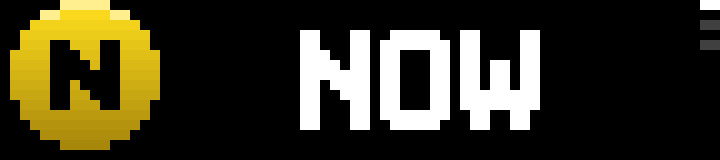
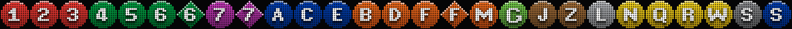
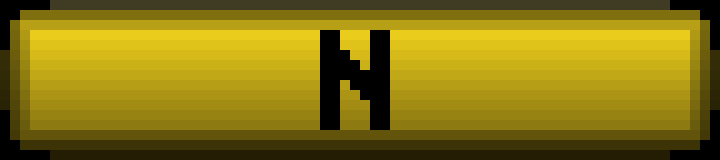

Live next-train departures for any station in the system, on the 72×16 LED matrix of a BUSY Bar. Route bullets, minutes to train, and a full-screen wipe when it leaves.


Pick a station, a direction, and optionally the lines you care about — the app does the rest, straight from the MTA's realtime feeds. No API key, no account, two tiny pure-Python dependencies.
1–7, A–Z, the shuttles, the Staten Island Railway. A 496-station directory is baked in; multi-line stations like Canal St just work.
Bullets and departure animations are generated at startup in official line colors, with glyphs taken from the Bar's own pixel fonts — for exactly the routes your station serves.
The departure flash is a compiled .anim the device plays
itself — buttery over USB, Wi-Fi, or the cloud relay alike.
Draws at priority 1: the board owns the display when the switch is on OFF and yields politely to everything else. The dial scrolls upcoming trains over USB — position dots take each train's line color.

Environment variables (or CLI flags). In busybar-manager, make each station a variation and switch from the dashboard.
# bare python — finds the Bar over USB, Wi-Fi, or cloud pip install requests STATION="Bedford Av" DIRECTION=downtown python app.py
# busybar-manager: this repo is a library source; stations are variations
POST /api/_manager/library/repos {"repo": "Pranav-Karra-3301/busybar-nyc-subway"}
POST /api/_manager/library/install {"slug": "nyc-subway"}
PUT /api/_manager/apps/nyc-subway/variations/canal-st
{"env": {"STATION": "Canal St", "DIRECTION": "uptown", "ROUTES": "N,Q"}, "priority": 30}
| Var | Meaning |
|---|---|
STATION | Station name, fuzzily matched — all platforms of same-named stations merge |
DIRECTION | N / S / uptown / downtown, or a destination label like Brooklyn |
ROUTES | Optional filter (N,Q); default is every route the station serves |
STOPS | Exact GTFS platform ids (Q01N,R23N) for full control |
BUSYBAR_PRIORITY | 1 = only when the Bar is OFF (default) · 30+ = over the clock |
The BUSY Bar is an open device: a 72×16 RGB LED matrix, a 160×80 back OLED, and an HTTP API over USB, LAN, and cloud. This app speaks it natively.
| Front display | 72×16 RGB LED matrix · 60 Hz · adaptive brightness · drawn via element lists that merge by id |
|---|---|
| Departure flash | Firmware bicycle0 .anim — RLE frames, ~15 KiB per route, compiled by a stdlib port of the firmware's own encoder |
| Glyphs | Extracted from the Bar's LVGL pixel fonts (busy_bold_7/_10, OFL-1.1) — a generated "W" is the letter the device itself would draw |
| Assets | Uploaded once, content-hash named, diffed against the device's storage on start |
| Every image on this page | A real frame dump off the hardware (GET /api/screen), 10× nearest-neighbor |